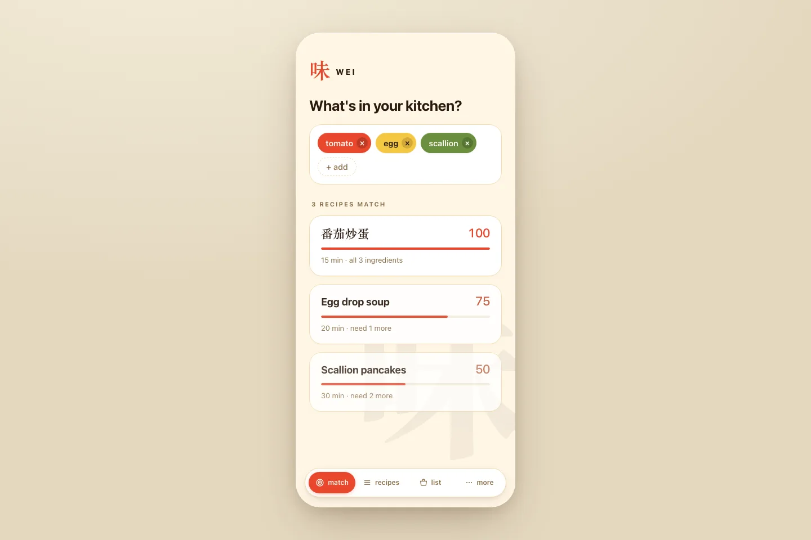
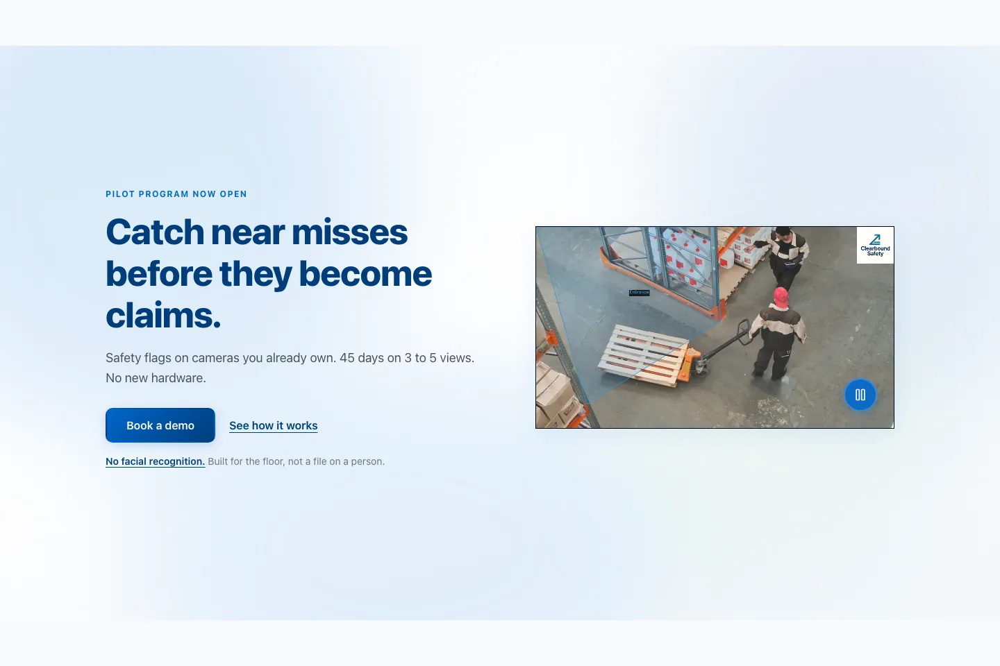
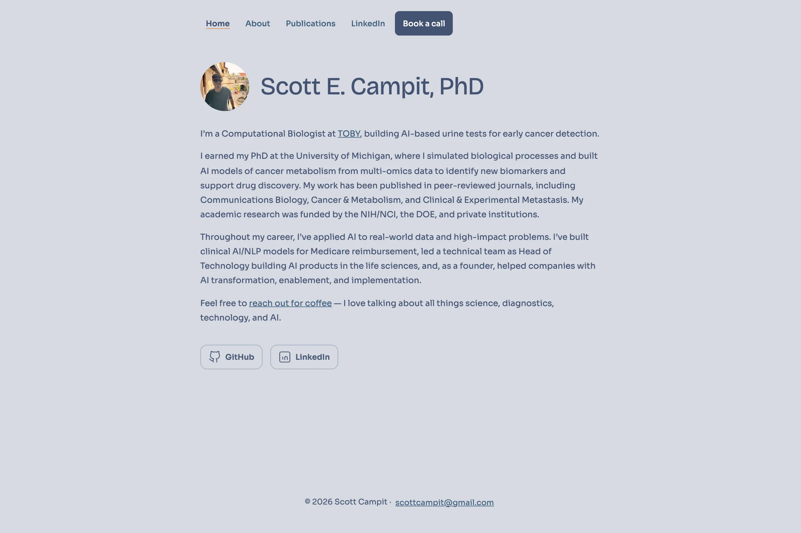

Amy
Wong
Wei
Product design, UX and brand, in stealth
A recipe app that starts from what is in your kitchen. Prototype, brand, scope decisions and a build brief, designed before any code.

Clearbound Safety
Web design, content and SEO
An AI camera safety pilot for warehouses and food plants. Site structure, copy and trust design for buyers who worry about their teams being watched.

Melodori
Brand and web
An AI consultancy for teams. Brand, website and a written design system that keeps every page plain and consistent.
Scott Campit
Web design, color and type
A personal site for a computational biologist. Design, copy and build, from the first version to its latest update.

Types & Tomes
Brand, web and e-commerce
A small-batch craft brand — brand identity, website, and shop for a business built on handmade goods and Chinese knotting.
Services
I design products from the first prototype, plus the website and brand around them.
-
Product and UI/UX design
Prototypes, screens and the scope for your first version, settled before anyone writes code.
See Wei
-
Web design
A site that says what you do on the first screen, with copy written for the people who buy from you.
See Clearbound Safety and Scott Campit
-
Brand identity
Logo, type, color and the rules for using them, so your brand looks the same on a market sign as on your site.
See Melodori and Types & Tomes
-
Ongoing design support
A retainer for the menus, posts and page updates a business keeps needing after launch.
Amy Wong
I'm a Chinese-American designer based in Texas. My work lives where identity meets the ongoing: product interfaces, prototypes and websites, and the logos, signage, prints and packaging that keep a brand alive after launch.
I came to design from biotech with degrees in Biochemistry (B.Sc. and M.S.). It sounds like a non sequitur until you notice that both are about observation, pattern-finding, and making complicated things feel simple.
Outside of client work, I run Types & Tomes, a small-batch craft brand built around Chinese knotting, books, and mechanical keyboards. It keeps me making things with my hands in a career that's mostly pixels.
I'm always open to projects I'm excited about, whatever shape they take.
My studio, Chunky Melon Design, is named after my fat cat, Melon.